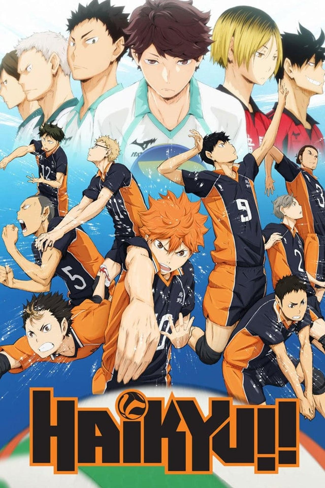
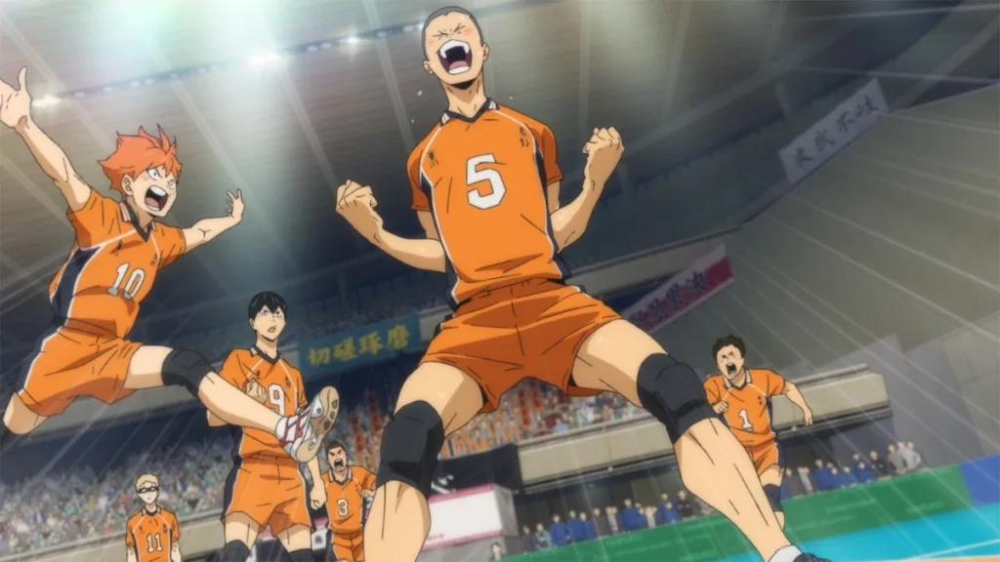

ぼくは「ハイキュー!!」という日本のアニメを見て、バレーボールを始めました。このアニメは、日向(ひなた)というせがひくい男の子の話です。日向(ひなた)のゆめは、すごいバレーボールのせんしゅになるというものです。でも、バレーボールでは、せが高い人のほうがアタックがかんたんです。日向(ひなた)はせがひくいので、ほかのせんしゅよりたくさんれんしゅうしなければいけません。
「ハイキュー!!」はとてもおもしろくて、わくわくするアニメです。しあいはとてもおもしろいし、キャラクターたちはかった時もまけた時も強い気持ちを見せます。ぼくは見ている時、いつも日向(ひなた)のチームにかってほしかったです。特に、まけてもれんしゅうするキャラクターたちが好きでした。このアニメを見て、子供の時にスポーツが大好きだったと思いました。長い間、あまりスポーツをしていなかったので、ほかの人としあいをする時のわくわくする気持ちがなつかしくなりました。

「ハイキュー!!」を見た後で、ぼくもバレーボールをしてみたくなりました。でも、はじめはとてもきんちょうしました。新しいスポーツを始めるのは、もうおそいと思いました。ほかの人たちは何年もバレーボールをしていましたが、ぼくはぜんぜん上手じゃありませんでした。それに、一人で知らない人たちとバレーボールをするのもこわかったです。たくさんまちがえたら、ほかの人たちがこまるかもしれないと思いました。
とてもきんちょうしましたが、バレーボールをしてみました。はじめはとてもむずかしかったです。たくさんまちがえたし、ほかの人たちのように上手にプレーできませんでした。でも、みんなしんせつだったので、こわくなくなりました。たくさんれんしゅうして、少しずつ上手になりました。そして、バレーボールがもっと好きになりました。今はバレーボールをするのが大好きです。特に、みんなが一生けんめいがんばっているしあいが好きです。
バレーボールを始めて、本当によかったと思います。日向とぼくは少しにています。日向はせがひくいですが、たくさんがんばりました。ぼくは新しいスポーツを始めるのがこわかったですが、しってみました。二人ともあきらめませんでした。「ハイキュー!!」を見て、むずかしそうでも、まずしってみるのが大切だと思いました。このアニメのおかげで、大好きなスポーツを見つけました。
まちがえた: mistake
一生けんめい : with all ones effort